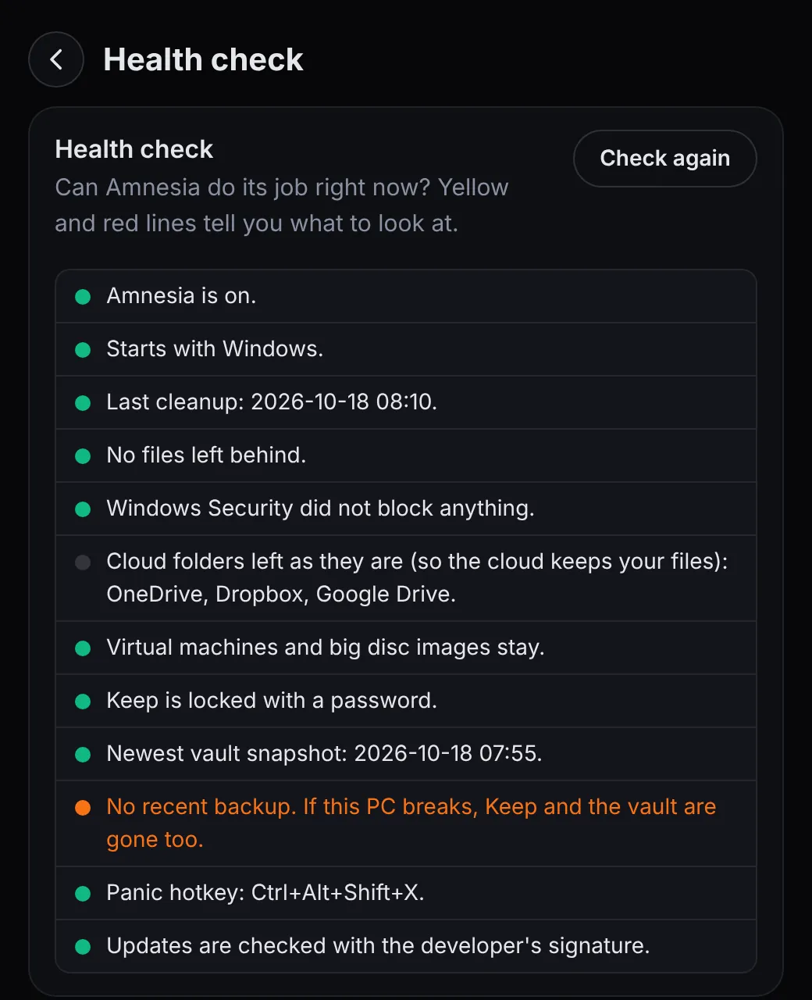
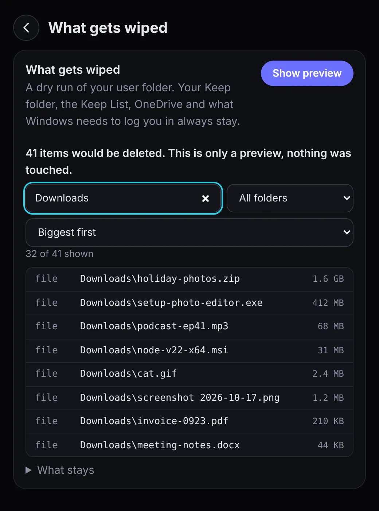
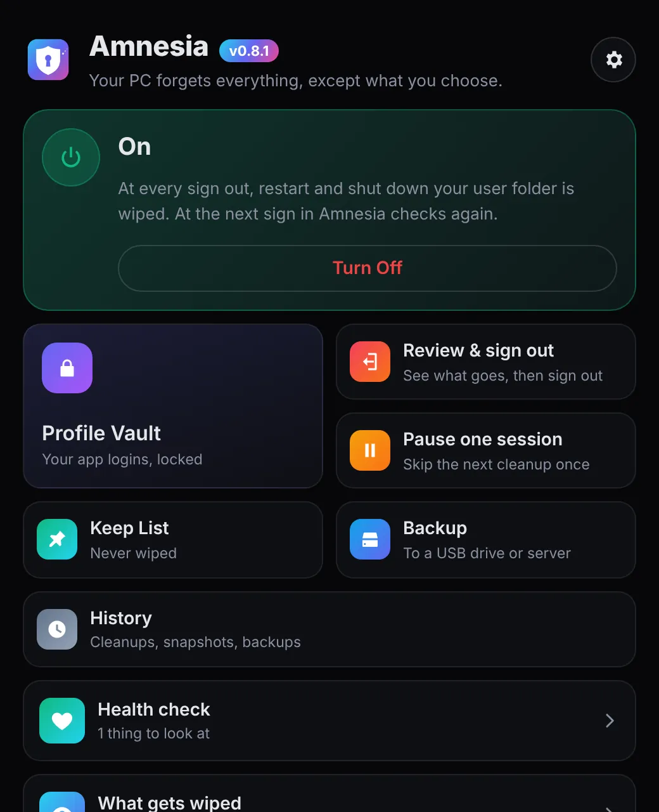
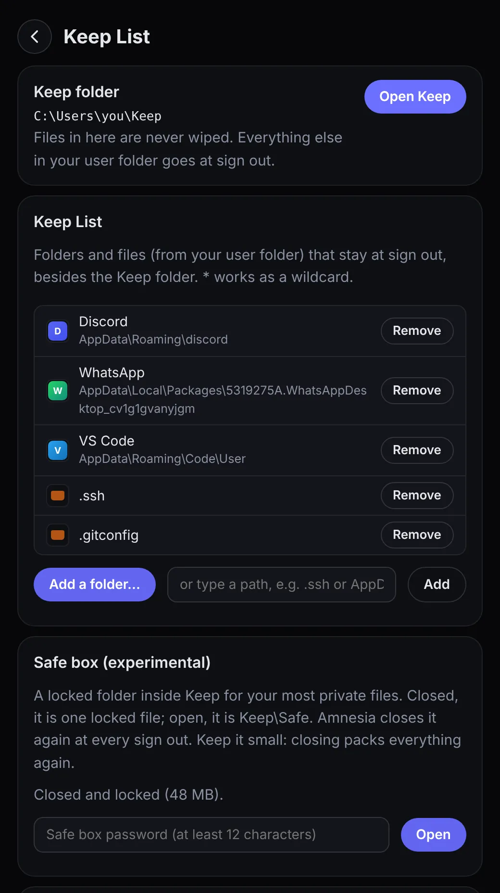
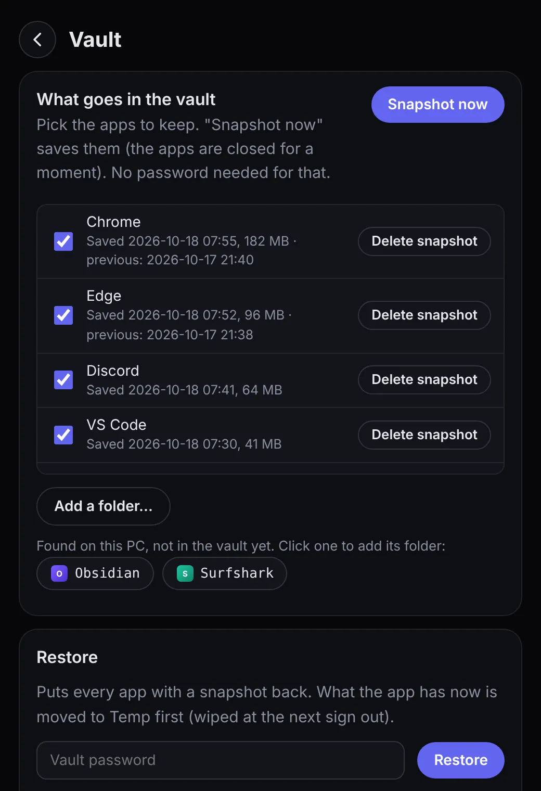
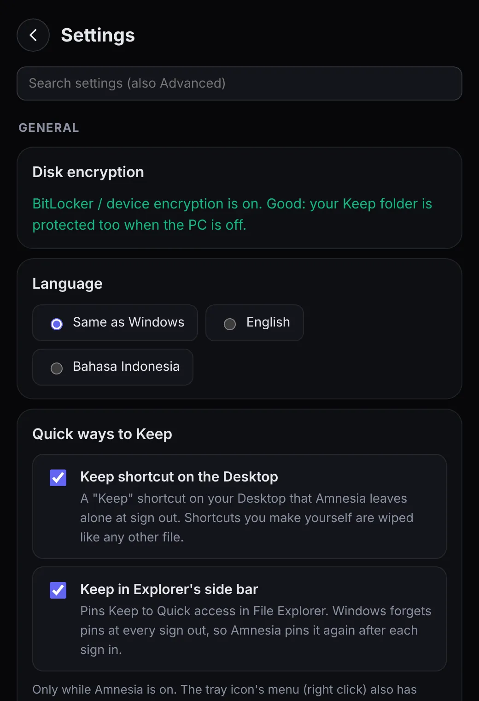
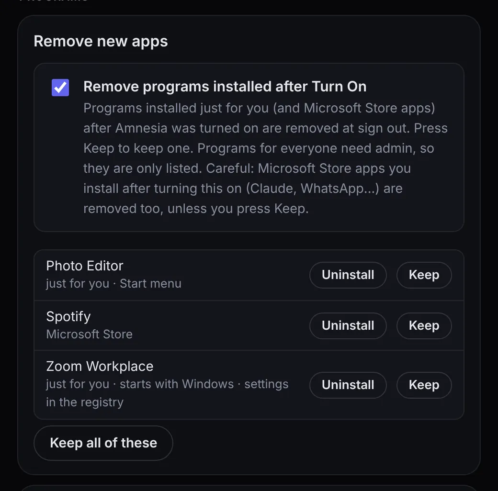
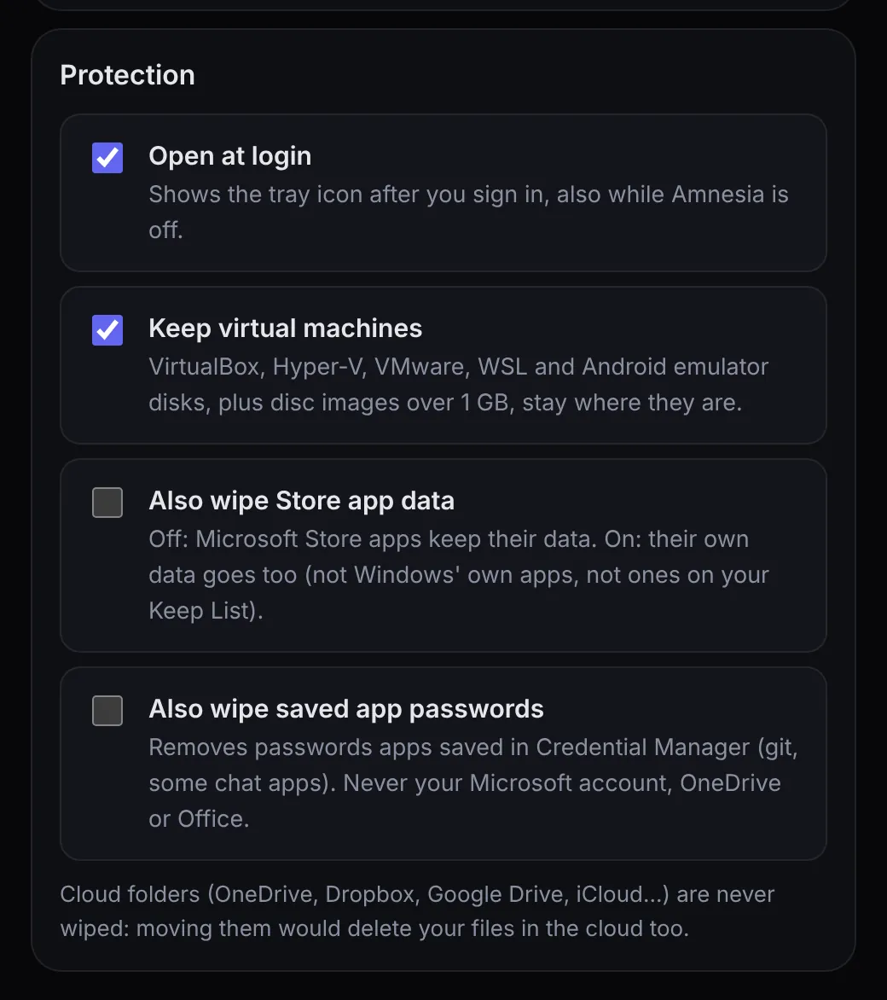
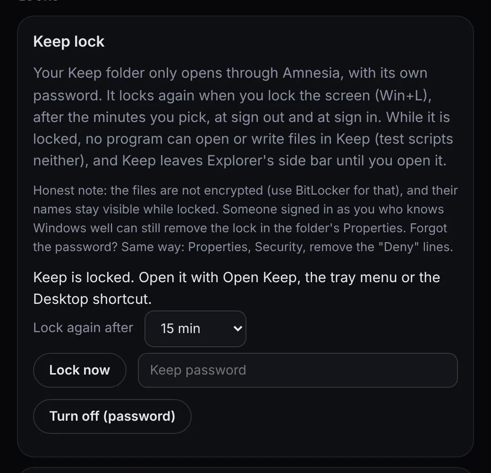

01 / 11
Beranda
Kartu berwarna menunjukkan apakah Amnesia Menyala, Mati, atau dijeda. Untuk menyalakan, centang "Saya paham" dulu. Mematikannya butuh dua klik, supaya tidak terjadi tanpa sengaja.
Jendela boleh ditutup, Amnesia tetap jalan di tray.
Setiap kali kamu sign out, restart, atau shut down, Amnesia membersihkan folder user kamu: riwayat, download, data app, dan jejak yang disimpan Windows. Folder Keep tetap ada, dan login kamu menunggu di vault terenkripsi.
Amnesia benar-benar menghapus data, dan itu tidak bisa dibatalkan. Baca ketentuannya sebelum memasang.
01 · Open source
Amnesia untuk Windows gratis, berlisensi MIT, dan dikembangkan terbuka di GitHub, satu repository dengan versi Mac. Setiap Setup.exe dibuat oleh GitHub dari kode yang sama, lengkap dengan SHA256 dan bukti build (attestation) yang bisa kamu cek.
Grafik commit dibaca dari GitHub. Kalau tidak muncul, lihat semua commit di sana →
02 · PC kamu, setiap hari
Browser menyimpan riwayat dan cookie. Downloads dan Desktop penuh file yang cuma dipakai sekali. Windows juga punya catatan sendiri: file terakhir, yang kamu ketik di Run dan Explorer, riwayat pencarian, thumbnail, tab Notepad, riwayat clipboard.
Semuanya terus menumpuk sampai kamu bersihkan sendiri. Atau malah tidak pernah.
03 · Sign out
Begitu kamu sign out, restart, atau shut down, Amnesia menghapus semua itu. Amnesia mulai membersihkan tepat saat Windows bertanya "boleh sign out?", dan Windows menampilkan "Amnesia is cleaning up..." sampai selesai. Yang tersisa hanya pilihanmu: folder Keep, Keep List, dan login di vault. Program yang sudah terpasang juga tetap ada.
Saat sign in berikutnya, Amnesia mengecek sekali lagi. Jadi crash atau mati listrik pun tidak meninggalkan jejak.
Selective Amnesia artinya: semua dilupakan, kecuali yang kamu pilih untuk disimpan.
04 · Yang tetap ada
Setelah dipasang, Amnesia dalam keadaan Mati. Tidak ada yang dihapus sampai kamu mencentang "Saya paham" dan menekan Nyalakan, dan daftarnya bisa kamu cek dulu.
05 · Untuk PC sungguhan
Versi 0.8 lahir dari audit lengkap dan tes di laptop Windows 11 sungguhan. Ini aturan yang diikuti setiap sign out.
Konsekuensi jujur: karena pembersihan mulai saat Windows bertanya, membatalkan sign out setelah itu tidak mengembalikan apa pun. Sama seperti menekan "Bersihkan sekarang".
06 · Profile Vault
Brankas terenkripsi untuk login app kamu: Chrome, Edge, Brave, Firefox, Discord, Telegram, WhatsApp, Slack, Session, Element, Obsidian, Thunderbird, Bitwarden, VS Code, Claude, Antigravity, Windsurf, Gemini CLI, OpenCode, Git, dan folder apa pun yang kamu tambahkan. Sign in ke PC yang bersih, ketik satu password, dan semuanya kembali.
Memory Recall Pulihkan mengembalikan login kamu dengan password. Notifikasi setelah sign in mengingatkan kamu.
Global Amnesia Salah password 3 kali atau mengetik kata panik, dan vault hilang selamanya.
Catatan jujur: Windows mengikat login tersimpan ke user Windows kamu. Snapshot kembali di PC ini dan user ini, bukan di PC lain.
07 · Setiap hari
Setelah semuanya disiapkan, cuma ini yang perlu kamu lakukan.
PC mulai dalam keadaan bersih. Klik pengingatnya, ketik password vault, lalu tekan Pulihkan.
Login kamu sudah kembali. File yang masih perlu besok, simpan di folder Keep.
Setiap app di vault tersimpan sendiri setelah kamu menutupnya.
Sisanya dihapus, tanpa jejak.
Jeda satu sesi Lewati satu kali sign out dan sign in berikutnya, tanpa mematikan Amnesia.
08 · Backup
Folder Keep, Keep List, dan vault dalam satu file terkunci. Dikunci dengan vault kamu, jadi tidak perlu password tambahan.
Memory Recall Pindah ke PC baru: pasang Amnesia, pilih file backup, ketik password vault. Folder Keep, Keep List, dan vault kembali.
09 · Keluar cepat
Untuk orang yang kepo, PC yang dipinjam, atau orang yang memaksa "buka sebentar saja". Semua ini mati sampai kamu nyalakan di Pengaturan.
Tekan Ctrl + Alt + Shift + X (atau Q, atau F12). Layar langsung terkunci, Amnesia membersihkan dan sign out tanpa menunggu app lain. Tetap jalan saat dijeda, dan mencoba lagi kalau Windows lambat.
Pilih satu flashdisk. Cabut, dan Amnesia membersihkan lalu sign out, atau membersihkan lalu mematikan PC. Kamu yang pilih.
Lupa ditinggal? Setelah 5 sampai 60 menit muncul hitung mundur 60 detik, lalu layar dikunci, dibersihkan, dan sign out. Gerakkan mouse untuk membatalkan.
Diminta password vault? Ketik kata panik saja. Vault langsung dihapus, folder Keep juga kalau kamu memilihnya.
Salah password vault 3 kali berturut-turut menghapus vault selamanya. Amnesia memperingatkan sebelum percobaan terakhir. Bisa dimatikan.
Catatan jujur: Amnesia melindungi kamu setelah sign out. Selama masih sign in, PC kamu terbuka seperti biasa, jadi kunci layarnya (Win+L). Keluar cepat tidak menunggu pekerjaan yang belum disimpan, dan kata panik tidak bisa dibatalkan.
10 · Kunci
Dua kunci di Pengaturan, Lanjutan, dan brankas di halaman Keep List. Ini yang bisa, dan yang tidak bisa mereka lakukan.
Folder Keep hanya bisa dibuka lewat Amnesia, dengan password sendiri: Buka Keep, menu tray, atau shortcut di Desktop. Terkunci lagi saat layar dikunci (Win+L), setelah menit yang kamu pilih, serta saat sign out dan sign in. Selama terkunci, tidak ada program yang bisa membuka atau menulis file di sana.
Untuk PC yang dipakai banyak orang, seperti lab komputer atau perpustakaan. Administrator memasang PIN minimal 6 angka. Setelah itu user Windows ini tidak bisa mematikan, menjeda, menutup, meng-uninstall Amnesia, atau mengubah pengaturan dan Keep List. Amnesia selalu jalan setiap sign in, dan PIN membuka pengaturan selama 10 menit.
Folder terkunci di dalam Keep untuk file paling pribadi, dengan password sendiri. Saat tertutup, isinya satu file terenkripsi (AES-256-GCM, format yang sama dengan vault). Saat dibuka, ada di Keep\Safe. Amnesia menutupnya lagi setiap sign out, sesudah pembersihan.
11 · Cek kesehatan
Satu halaman menjawab "bisakah Amnesia bekerja sekarang?". Hijau berarti aman, kuning dan merah menunjukkan yang perlu dicek, dan tiap baris bilang di mana memperbaikinya.
Yang tidak bisa dilakukan Amnesia, tertulis di app-nya

12 · Yang dihapus
"Yang dihapus" adalah simulasi sign out berikutnya. Isinya semua file, folder, dan jejak yang akan hilang. Membukanya tidak menghapus apa pun.
Cek & sign out menampilkan daftar yang sama tepat sebelum sign out, plus program yang akan dihapus, dengan tombol untuk menyimpan sesuatu dulu.

13 · Privat
Amnesia tidak punya server, tidak butuh akun, tidak melacak, dan tidak mengumpulkan data. Cek update hanya menanyakan nomor versi terbaru ke GitHub.
Semua di bawah ini ada di Pengaturan. Fitur tambahannya mati sampai kamu nyalakan.
Pengaturan privasi bawaan Windows, khusus akun kamu: tanpa daftar terbaru, tanpa riwayat clipboard, tanpa hasil web di Start, tanpa ID iklan, Recall dan Copilot mati. Batalkan semua mengembalikan persis seperti sebelumnya.
Program yang dipasang khusus untuk kamu setelah Amnesia dinyalakan dihapus saat sign out, app Microsoft Store juga. Foldernya menunggu 3 hari dulu di tempat sampah Amnesia. Tekan Simpan dan folder program serta data app itu masuk Keep List.
Pilih app yang terpasang dari daftar, dan Amnesia menyimpan semua folder tempat app itu menaruh datanya, termasuk login dan pengaturan.
Dua pilihan tambahan: hapus juga data app Microsoft Store, dan hapus juga password yang disimpan app di Credential Manager. Tidak pernah akun Microsoft, OneDrive, atau Office.
Folder dan pengaturan registry yang ditinggalkan program yang sudah di-uninstall. Tidak ada yang dihapus sampai kamu centang.
Membuka Windows Sandbox untuk file atau website yang mencurigakan. Hilang saat ditutup. Butuh Windows Pro atau Enterprise.
Untuk seluruh PC (admin, diminta sekali): kosongkan page file saat shut down, hibernasi mati, Recall dan riwayat aktivitas mati.
Cek update membaca tanda tangan developer di rilisnya. Tanpa tanda tangan yang sah, tidak ada yang dipasang: halaman rilis yang dibuka.
Daftar komunitas Winapp2 (sekitar 4.000 app), diunduh dari GitHub saat kamu tekan tombolnya. Password tersimpan tidak pernah disentuh.
Pembersihan jalan di dalam Amnesia.exe. Kalau Windows Security memblok sesuatu, Beranda memberi tahu cara mengizinkan Amnesia. Tidak pernah "matikan antivirus".
Kapan PC dibersihkan, app apa yang disimpan, kapan backup berjalan. Tanpa nama file.
Ada yang tidak jalan? Satu file teks di folder Keep, tanpa nama file. Tidak ada yang dikirim. Kamu yang pilih apa yang dibagikan.
Pengaturan menunjukkan apakah BitLocker atau enkripsi perangkat menyala, dan cara menyalakannya.
Menjalankan cipher /w bawaan Windows, supaya file yang dihapus lebih sulit dikembalikan. Lambat, dan bertanya dulu.
Amnesia sudah menghapus sebagian besar folder user di setiap sign out, jadi Perawatan untuk yang tetap ada: folder Keep, app yang kamu simpan dan file besar dari sesi ini. Setiap tindakan memindai dulu dan menampilkan daftar, dan tidak ada yang berisiko dicentang untukmu.
Lihat apa yang memakan ruang: folder Keep, vault, Recycle Bin, Temp, folder dan file terbesar, unduhan lama. Hanya dibaca, tidak ada yang dihapus di sini.
Mengosongkan Temp, crash dump, cache app dan tempat sampah Amnesia. File yang masih dibuka Windows dilewati. Recycle Bin ada di daftar, tapi tidak pernah dicentang untukmu.
Program yang dipasang khusus untukmu menjalankan uninstaller-nya sendiri. Program untuk semua pengguna membuka Pengaturan Windows. Sisa cache dipindah ke Recycle Bin, data pribadi tetap ada kecuali kamu centang.
node_modules, target, build, dist, juga bin dan obj dari project .NET bisa dipindah ke Recycle Bin. Folder yang dipakai 7 hari terakhir atau dilacak git tidak disentuh.
File .msi dan .msix lama dipindah ke Recycle Bin. File setup .exe ditampilkan, tapi tidak pernah dipilihkan, begitu juga image disk dan mesin virtual.
Mulai ulang Explorer, atau buka Startup apps dan pengaturan Storage. Tanpa admin.
Kalau Keep List tidak bisa dibaca atau hilang, pembersihan tidak menghapus apa pun dan dicatat di Riwayat. Kalau pengecekan tidak yakin, item disimpan.
Setiap Perawatan tercatat di Riwayat beserta ruang yang dikosongkan. Cek kesehatan juga menampilkan sisa ruang disk, memori dan baterai.
Pilih satu mode untuk setiap sign out, restore hanya app yang kamu perlukan, dan minta saran AI tanpa membagikan file kamu. Setiap perubahan ada pratinjaunya dulu dan berlaku mulai sign out berikutnya.
Seperti akun baru setiap sign in. Hanya folder Keep kamu dan yang dibutuhkan Amnesia yang tetap ada. Snapshot otomatis vault saat sign out dimatikan, dan snapshot masih bisa di-restore manual.
Folder Keep tetap ada dan login app kembali dari vault. Sama seperti sebelumnya.
Semua isi AppData tetap ada, jadi app tetap menyimpan pengaturan dan loginnya, juga cache-nya. File kamu, Downloads dan Desktop dihapus. Riwayat dan cookie browser di dalam folder browser itu sendiri juga tetap ada, karena foldernya disimpan.
Keep List buatan kamu sendiri. Dipilih otomatis saat kamu mengubah baris dari sebuah mode. Mode hanya mengubah bagiannya sendiri yang ditandai, jadi baris kamu sendiri selalu tetap ada.
Lihat apa yang mulai dihapus dan apa yang mulai disimpan, dengan peringatan kalau yang dihapus lebih banyak. Tidak ada yang dihapus saat kamu ganti mode. Daftar mode yang hilang atau rusak tidak pernah mengosongkan Keep List.
Restore hanya yang kamu perlukan, misalnya Kerja atau Santai, atau semuanya. Profil bisa diganti nama, ditambah dan dihapus. Satu browser menyimpan satu kumpulan login, jadi browser kedua membuat pemakaian pribadi tetap terpisah.
Amnesia membuat laporan tanpa isi file dan tanpa nama file kamu, plus prompt siap pakai. Tempel ke AI pilihanmu, tempel jawabannya kembali dan centang perubahan yang kamu mau. Amnesia sendiri tidak mengirim apa pun.
14 · Di dalam app
Ini jendela utama Amnesia di Windows. Scroll atau pakai tombol panah, dan jendelanya terpecah satu per satu, lalu menyatu lagi.
01 / 11
Kartu berwarna menunjukkan apakah Amnesia Menyala, Mati, atau dijeda. Untuk menyalakan, centang "Saya paham" dulu. Mematikannya butuh dua klik, supaya tidak terjadi tanpa sengaja.
Jendela boleh ditutup, Amnesia tetap jalan di tray.
02 / 11
Klik kanan ikon Amnesia di samping jam: Buka Amnesia, Buka folder Keep, Cek dulu lalu sign out, Sign out darurat sekarang (juga jalan saat dijeda), Nyalakan atau Matikan.
Ikonnya muncul sendiri setiap kali sign in.
03 / 11
Centang app yang mau disimpan, atau klik app yang ditemukan Amnesia di PC ini. Snapshot sekarang menyimpannya, tanpa password. Pulihkan butuh password kamu.
Global Amnesia Salah password 3 kali atau kata panik menghapus vault selamanya.
04 / 11
Lihat apa yang hilang kalau kamu sign out sekarang. Mau simpan sesuatu? Tekan "Simpan sesuatu dulu". Sudah oke? Sign out sekarang.
05 / 11
Lewati satu kali sign out dan sign in berikutnya, tanpa mematikan Amnesia. Setelah itu menyala lagi sendiri.
06 / 11
Folder Keep berisi file yang tidak pernah dihapus. Keep List menyimpan folder seperti .ssh atau pengaturan app.
"Simpan sebuah app" menampilkan app yang terpasang. Klik Simpan dan semua folder data app itu tetap ada.
Brankas folder terkunci di dalam Keep, ditutup lagi setiap sign out. Masih eksperimen.
07 / 11
Simulasi sign out berikutnya, dengan pencarian, filter folder, dan Terbesar dulu. Membukanya tidak menghapus apa pun.
08 / 11
Folder Keep, Keep List, dan vault dalam satu file terkunci.
Memory Recall Pindah ke PC baru mengembalikan isi backup.
09 / 11
Catatan apa yang dilakukan Amnesia dan kapan: pembersihan, snapshot, pemulihan, dan backup.
Yang dicatat hanya waktu, jumlah, dan nama app. Tidak pernah nama file.
10 / 11
Bisakah Amnesia bekerja sekarang? Baris hijau berarti aman. Kuning dan merah bilang apa yang perlu dicek, dan di mana.
Di bawahnya, daftar jujur tentang yang tidak bisa dilakukan Amnesia.
11 / 11
Umum, Perlindungan, Update dan bantuan, lalu Lanjutan: Saat meninggalkan PC, Privasi dan Windows, Program, Kunci. Kotak pencarian di atas bisa pakai bahasa Inggris dan Indonesia.
Global Amnesia Uninstall, dengan pilihan ikut menghapus pengaturan, Keep List, dan vault. Ia meminta password Keep dan memperingatkan kalau brankas masih berisi file.
Semuanya
Screenshot Amnesia untuk Windows v0.8.1, dengan file contoh. Gambarnya mengikuti bahasa dan mode terang atau gelap halaman ini.

Kartu status di atas, semua halaman cukup satu klik.
Setiap baris hijau, kuning, atau merah, dengan tempat memperbaikinya. Lalu daftar batasan yang jujur.

Folder Keep, folder yang kamu simpan, dan brankas yang masih eksperimen: satu file terkunci sampai kamu buka.

Centang app-nya, tekan Snapshot sekarang. Masing-masing menunjukkan kapan disimpan, ukurannya, dan snapshot sebelumnya.
Cari, satu folder, Terbesar dulu. Hanya simulasi: tidak ada yang disentuh.

Pencarian di atas. Status enkripsi disk, bahasa, shortcut Keep dan sidebar Explorer, lalu update, bantuan, dan Lanjutan.

App baru ada di daftar dengan tombol Simpan. Yang dihapus menunggu 3 hari di tempat sampah Amnesia.

Mesin virtual tetap ada secara bawaan. Data app Store dan password app tersimpan bisa kamu nyalakan sendiri.

Keep hanya terbuka lewat Amnesia. App-nya bilang terus terang apa yang tidak bisa dilakukan kunci ini.
Teks asli dari app-nya. Semua yang menghapus, membuat kamu sign out, atau tidak bisa dibatalkan dijelaskan terus terang, sebelum terjadi.
Sebelum menyalakan
Tidak ada yang dihapus. Coba "Lihat simulasi" dulu, lalu nyalakan Amnesia.
Yang dihapus
Yang tetap ada
Saya paham: setiap sign out, restart dan shut down, semua di luar folder Keep dan Keep List dihapus. Saya sudah coba "Lihat simulasi".
Cek & sign out
Ini yang hilang kalau kamu sign out sekarang. Mau simpan sesuatu? Masukkan ke Keep List dulu.
Program yang akan dihapus
Sign out darurat
Perhatikan
Global Amnesia
Percobaan terakhir
Uninstall dari Pengaturan
Yang tetap ada
Yang perlu kamu lakukan
Password Keep (Keep sedang dikunci)••••••••••••
Di Beranda, kalau startup dimatikan
Perhatikan
Amnesia benar-benar menghapus data. Begitu dinyalakan, semua isi folder user kamu di luar folder Keep dan Keep List dihapus setiap sign out, restart, dan shut down. Tidak masuk Recycle Bin dan tidak bisa dibatalkan. Simpan dulu yang kamu perlukan di Keep, dan lihat Yang dihapus sebelum sign out pertama. Amnesia adalah software gratis yang diberikan apa adanya, dan risiko pemakaiannya ada di tangan kamu.
Dari GitHub Releases
Amnesia-Setup-…-x64.exe (kebanyakan PC) atau -arm64.exe (Windows ARM).Nama tombolnya bisa sedikit berbeda, tergantung bahasa Windows kamu.
Opsional
Get-FileHash .\Amnesia-Setup-0.10.0-x64.exeAlgorithm Hash --------- ---- SHA256 3F9A…C21E Same as SHA256SUMS.txt
Setiap rilis punya SHA256SUMS.txt yang ditandatangani developer, dan file Setup dibuat oleh GitHub dengan build attestation: gh attestation verify menunjukkan asal sebuah file. Hash di atas cuma contoh.
Open source di GitHub
Yang kamu perlukan
Update: Pengaturan → Update → Cek sekarang, dengan urutan ini. Hanya rilis dengan tanda tangan sah yang terpasang.
16 · Tutorial
Dari file Setup sampai sign out bersih pertama. Tonton tiap langkah, lalu ikuti hal yang sama di PC kamu. Belum ada yang dihapus sebelum langkah 7.
01 / 08
Buka file Setup. Amnesia belum punya sertifikat berbayar, jadi Windows memberi peringatan: tekan More info, lalu Run anyway. Setup menampilkan ketentuan dan peringatan, lalu memasang khusus untuk kamu.
02 / 08
Saat Amnesia pertama kali dibuka, tur singkat menjelaskan apa yang dihapus dan apa yang tetap ada. Pilih bahasa di sana.
03 / 08
Folder Keep tidak pernah dihapus. Di halaman Keep List, tambahkan folder seperti .ssh, atau pakai Simpan sebuah app: Amnesia menyimpan semua folder tempat app itu menaruh datanya.
04 / 08
Ketik password vault minimal 12 karakter dan lihat meternya. Centang app yang login-nya mau kembali, lalu tekan Snapshot sekarang.
05 / 08
Yang dihapus → Lihat simulasi menampilkan semua yang akan dihapus saat sign out berikutnya, dan yang tetap ada. Masih perlu sesuatu? Taruh di Keep atau Keep List.
06 / 08
Centang "Saya paham" di kartu Beranda, lalu tekan Nyalakan. Sesi ini tetap seperti sekarang sampai kamu sign out.
07 / 08
Cek & sign out menampilkan yang hilang, lalu sign out. Setelah login lagi, buka Vault, ketik password, lalu tekan Pulihkan.
08 / 08
Selalu dengan urutan ini: Matikan, pasang update, Nyalakan. Pengaturan → Update → Cek sekarang melakukannya untuk kamu.
Belum ada yang dihapus sebelum langkah 7.
17 · FAQ
Bisa. Setelah dipasang, Amnesia dalam keadaan Mati dan tidak menghapus apa pun. Buka Yang dihapus dan tekan Lihat simulasi: isinya cuma daftar yang akan hilang. Nyalakan kalau daftarnya sudah pas.
Tidak ke mana pun yang bisa kamu buka. Tidak masuk Recycle Bin dan tidak bisa dikembalikan. Begitu Amnesia menyala, ia benar-benar menghapus, jadi cek Yang dihapus dulu dan simpan yang kamu perlukan di Keep atau Keep List.
Tidak. Amnesia menyimpannya, tapi tidak mengenkripsinya. Nyalakan BitLocker atau enkripsi perangkat: Settings → Privacy & security → Device encryption. Pengaturan Amnesia menunjukkan apakah sudah menyala.
Pengecekan saat sign in berikutnya akan menangkapnya dan membersihkan.
Amnesia membersihkan begitu Windows bertanya "boleh sign out?". Kalau kamu batalkan setelah itu, misalnya karena ada app yang minta menyimpan, pembersihan sudah berjalan. Sama seperti menekan "Bersihkan sekarang". Pakai Cek & sign out kalau kamu ragu.
Tidak. Folder cloud (OneDrive, Dropbox, Google Drive, iCloud Drive, Nextcloud, MEGA, Box, pCloud, Proton Drive, dan folder sync Windows lainnya) dibiarkan, karena memindahkannya bisa ikut menghapus file kamu di cloud. Disk VM dan disc image 1 GB ke atas juga tetap ada, kecuali kamu matikan di Pengaturan, Perlindungan.
Buka Cek kesehatan di Beranda. Setiap baris hijau, kuning, atau merah, dan bilang di mana memperbaikinya. Riwayat menampilkan setiap pembersihan dengan jumlah item yang dihapus.
Tidak. Tanpa server, tanpa akun, tanpa pelacakan. Backup hanya pergi ke tempat yang kamu pilih. Cek update menanyakan nomor versi terbaru ke GitHub (bawaannya setiap minggu), dan bisa dimatikan.
Beranda memberi tahu kalau ada yang ditolak. Biasanya ini Controlled folder access: Windows Security → Virus & threat protection → Ransomware protection → Allow an app, lalu tambahkan Amnesia. Jangan matikan antivirus kamu.
Bisa, orang yang sign in sebagai kamu dan paham Windows bisa melepasnya lewat Properties folder. File-nya juga tidak dienkripsi. Kunci ini menahan orang iseng dan program lain, bukan orang yang benar-benar niat. Untuk perlindungan sungguhan, pakai BitLocker.
Buka Properties folder Keep → Security, lalu hapus baris "Deny". File kamu masih ada.
Layar langsung terkunci, Amnesia membersihkan dan sign out tanpa menunggu app lain. Pekerjaan yang belum disimpan hilang. Menu tray punya hal yang sama: Sign out darurat sekarang.
Folder terkunci di dalam Keep yang masih eksperimen, untuk file paling pribadi. Saat tertutup, isinya satu file terenkripsi (AES-256-GCM, seperti vault). Saat terbuka, ada di Keep\Safe. Amnesia menutupnya lagi setiap sign out, sesudah pembersihan. Isinya jangan terlalu besar: menutup berarti mengemas semuanya lagi.
Orang bisa menutup Amnesia lewat Task Manager. Pengecekan saat sign in berikutnya tetap membersihkan. Mengubah pengaturan atau mematikannya butuh PIN administrator.
Tidak ada yang bisa membukanya, termasuk kamu. Buat vault baru, lalu login ulang ke app kamu. Catat password-nya di tempat aman.
Setelah kamu menutup app yang berubah, di latar belakang (dicek setiap menit). Alat tanpa jendela, seperti Claude Code atau Git, setelah 3 menit tanpa perubahan. Kalau Edge tetap jalan di latar belakang ("startup boost"), ia disimpan setelah benar-benar tertutup.
Biasanya tidak. Windows mengikat login tersimpan ke user Windows kamu, jadi snapshot kembali di PC ini dan user ini. Pindah ke PC baru membawa folder Keep, Keep List, dan vault, tapi kamu mungkin perlu login ulang ke beberapa app.
Kalau snapshot baru jauh lebih kecil dari sebelumnya, vault memberi tahu. Centang "Pakai snapshot sebelum yang terbaru" saat memulihkan.
Kata panik adalah kata opsional pilihanmu. Kalau diketik di kolom password, vault terhapus (folder Keep juga, kalau kamu memilihnya). Doomsday menghapus vault setelah 3 kali salah password berturut-turut. Doomsday bisa dimatikan.
App-nya belum bertanda tangan, jadi Windows belum mengenalnya. Tekan More info, lalu Run anyway. Mau lebih yakin? Cocokkan file-nya dengan SHA256SUMS.txt dari rilis yang sama.
Kebanyakan PC butuh x64. Pilih arm64 untuk Windows ARM, seperti laptop Snapdragon atau mesin virtual Windows di Mac.
Tidak. Terpasang khusus untuk kamu. Hanya beberapa hal opsional yang minta izin admin sekali: perlindungan Windows, menghapus folder sisa app, dan kunci lab.
Pengaturan → Update → Cek sekarang. Matikan Amnesia sebelum memasang update, lalu nyalakan lagi. Amnesia hanya memasang update kalau tanda tangan developer cocok; kalau tidak, halaman rilis yang dibuka.
Pengaturan → Uninstall Amnesia, atau lewat Apps & features seperti app lain. Amnesia mati dulu, jadi tidak ada lagi yang dihapus. Folder Keep selalu tetap ada. Kalau Keep terkunci, ia meminta password Keep, dan memperingatkan kalau brankas masih berisi file. Untuk ikut menghapus pengaturan, Keep List, dan vault, ketik HAPUS di kotaknya.
Hanya kalau "Hapus app baru" menyala. Program yang dipasang khusus untuk kamu setelah Amnesia dinyalakan dihapus saat sign out, dan foldernya menunggu 3 hari dulu di tempat sampah Amnesia. Tekan Simpan untuk menyimpannya. App Store tetap menyimpan datanya, kecuali kamu nyalakan "Hapus juga data app Store".
Ada, dan sudah lebih lama. Lihat halaman Mac.
Buka issue di GitHub. Tolong jangan tempel password, daftar file pribadi, atau hal pribadi lainnya. Kumpulkan log sengaja tidak menyertakan nama file.
Download, lalu lupakan semuanya. Pun intended.
Ketemu bug atau punya ide? Buka issue. Tanpa password atau daftar file pribadi, ya.